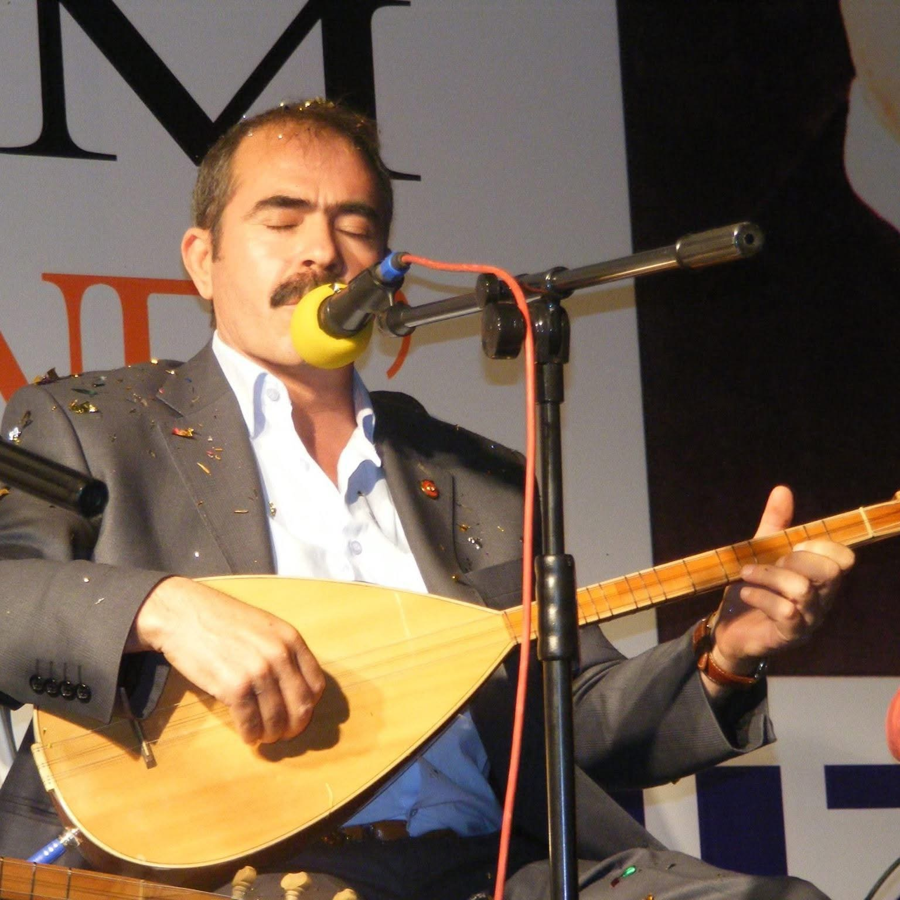

1964 — 2025
Çukurovalı Halk Ozanı: Aşık Ceyhani'nin Hayat Yolculuğu
13 Ocak 1964’te Adana’nın Ceyhan ilçesine bağlı Gümürdülü köyünde doğdu. Aşıklığa 12–13 yaşlarında başladı; Aşık Kara Mehmet’in rehberliğinde sanatını geliştirdi. Şiirlerinde ve türkülerinde aşkı, hasreti ve halkın yaşadıklarını dile getirdi.
tarihinde hayatını kaybetti. Sazı, sözü ve bıraktığı hatıralarla anısı yaşamaya devam ediyor.
Hayatını keşfet01 / ŞİİR ARŞİVİ
Şiirleri
Dizeleri ve el yazısı.
GÖNÜLLERDE KALAN İZLER
Onu Tanıyanların Sözleri
Âşık Ceyhanî ile yollarınız nerede kesişti? Sazıyla, sözüyle ya da dostluğuyla hayatınıza dokunduğu bir anı paylaşın; hatırası sizin sözlerinizle de yaşasın.
Bir hatıra bırakKültürel Kimlik
Âşık Ceyhanî’nin sanatını yaşatan bu site; Anadolu Türk kültürünün renkleri, Yörük dokumalarının motifleri ve âşıklık geleneğinin izleriyle hazırlanmıştır.
Orkun Sayıcı tarafından, babasının anısını yaşatmak amacıyla ve yüksek lisans projesi olarak hazırlanmıştır.
Kültürel kimliği keşfetBİRLİKTE YAŞATALIM
Sizde de bir hatırası var mı?
Bir fotoğrafınızı, ses kaydınızı ya da anınızı aile arşivine eklemek için bize e-posta gönderin. Paylaşımlar ailece değerlendirilir.